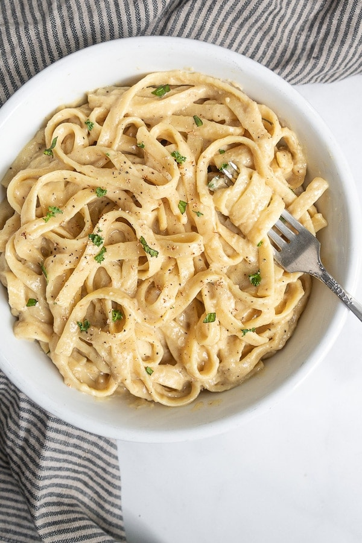

Vegan Fettuccine Alfredo (No Cashews)

Description
This vegan fettuccine alfredo has a velvety smooth and creamy sauce offering much-needed comfort on a cold day. Made nut-free and dairy-free.
Ingredients
- Fettuccine pasta
- Dairy-free butter or olive oil
- Unsweetened oat milk – Store-bought works fine (the recipe amount has been recently updated for store-bought oat milk). I used homemade oat milk, which makes the sauce thicker and may require up to double the amount.
- All-purpose flower
- Garlic
- Nutritional yeast - Adds a "cheesy" flavor
- Nutmeg
- Vegan lactic acid and lemon juice - Both add a sharp, tangy flavor to the sauce
- Salt and pepper
- Fresh parsley
Steps
- Boil the fettuccine pasta as directed on the package.
- Make a roux by melting the vegan butter or oil in a large skillet on low heat. Then gradually stir in the flour. Cook until it becomes a blonde color.
- Add the minced garlic, nutritional yeast, nutmeg, lemon juice, salt, and pepper. Cook for 5 minutes, stirring constantly to keep the sauce free of lumps.
- Drain the cooked pasta and add it to the sauce off the heat. Toss to coat the pasta.
- Serve with chopped or fresh parsley.